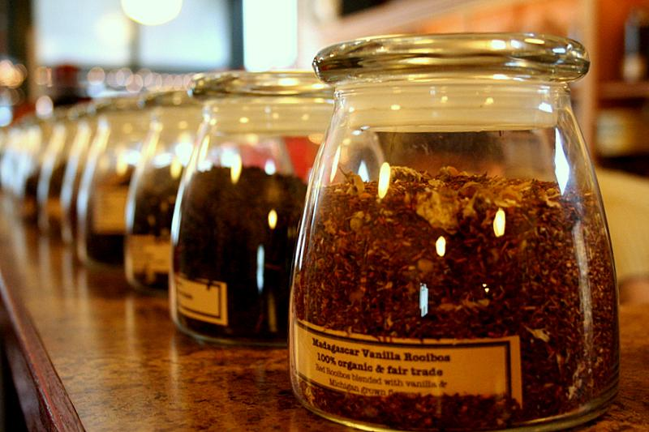
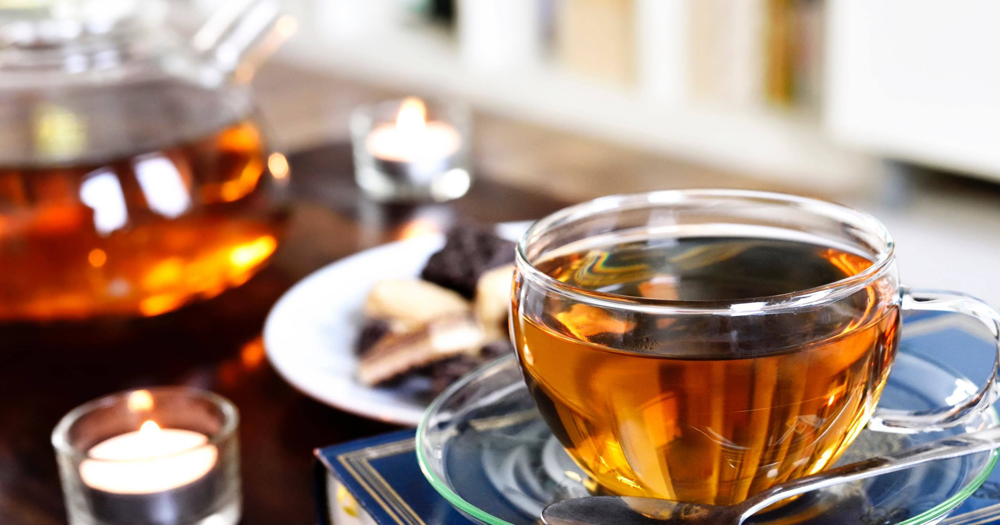
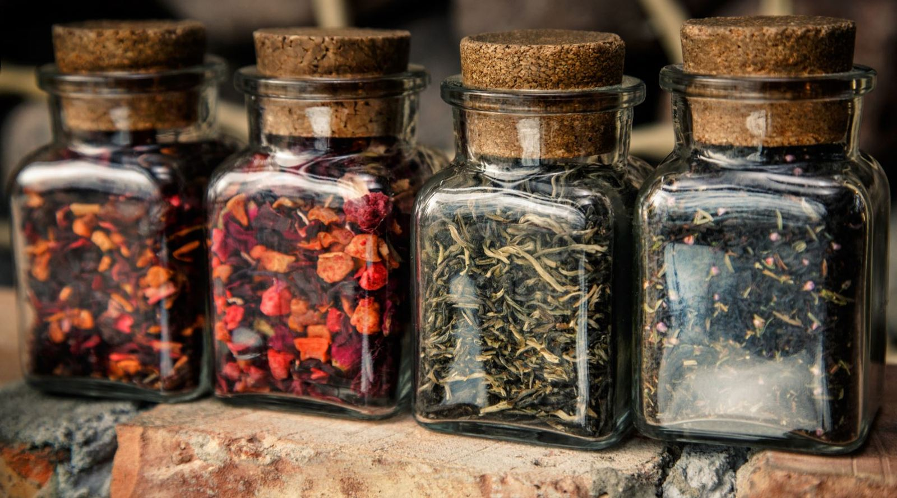

Contact us
For a more concrete definition, all varieties of tea are made
from the leaves of the Camellia sinensis plant. To simplify and
categorize, we often refer to the 6 types of tea which includes
black tea, green tea, wulong (oolong) tea, white tea, puer (pu-erh)
tea, and dark tea. The Camellia sinensis plant is native to Southeast
Asia, but it’s now being cultivated in tea-friendly climates world-wide.
Beverages we call “herbal tea” - peppermint, rooibos, chamomile, etc. –
are not from the Camellia sinensis plant. Therefore, they are not tea in
the technical sense (though we accept the phrase and don’t correct people
for using it).
Since all tea comes from the Camellia sinensis plant, the differences between the types of tea are primarily due to how they are processed after the leaves are picked. In theory, any tea plant growing anywhere can have its leaves made into any kind of tea, but this is not done in practice because geography, growing conditions, and local expertise are critical factors to proper tea production.
Yes, because all tea comes from the Camellia sinensis plant, it all contains (roughly) the same amount of caffeine. The biggest determining factors of how much caffeine will be in your cup is how much leaf you use, how hot you steep it, and how long you steep it.
“Herbal teas” are not from the Camellia sinensis plant and because of this the vast majority of them are caffeine free. These include chamomile, rooibos, ginger, hibiscus, fruit tisanes, and other non-camellia sinensis beverages that are steeped similar to tea.
We advocate for using loose leaf tea because it’s the most direct method of doing tea. It offers versatility, variety, customization, clarity, and the best bang for the buck (even if that means a lot of bucks). Tea bags offer convenience. In theory, you can offer the same tea you would buy as loose tea in a tea bag (might have to be a pretty large bag), but the constraints of leaf size, manufacturing/marketing costs, and other factors often prevent this.
